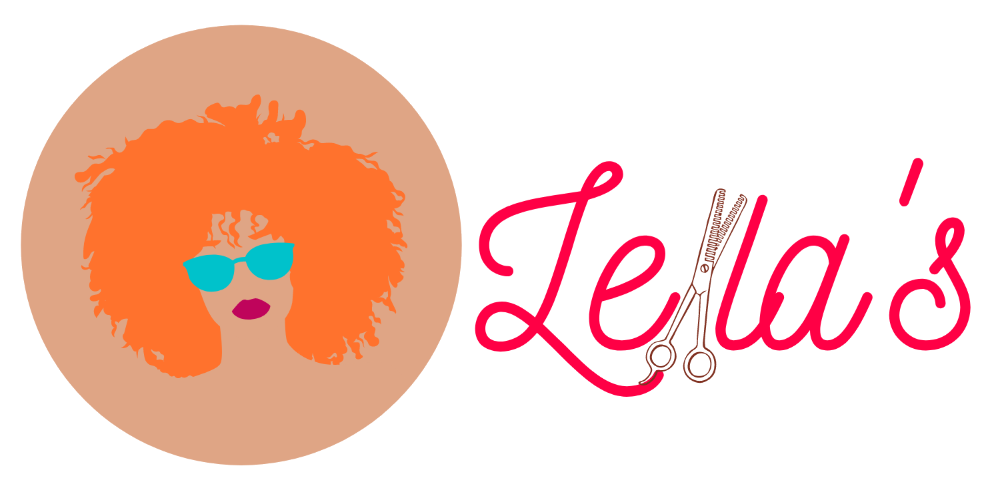

<nav class="navbar navbar-expand-lg navbar-light bg-light">
    <a class="navbar-brand col-10" routerLink=""></a>
    <div class="d-inline-flex">
        <app-servico-update *ngIf="mostraCadastrarServicos" [editaServico]="false" [criaServico]="true"></app-servico-update>
        <button *ngIf="mostraEntrarCadastrar" class="btn-rosa-tema btn btn-info my-2 mr-2" routerLink="/login-cadastro">Entrar ou cadastrar</button>
        <button *ngIf="isLoggedIn" class="btn btn-info my-2" (click)="logout()">
            <fa-icon [icon]="faSignOutAlt"></fa-icon>
        </button>
    </div>
</nav>
